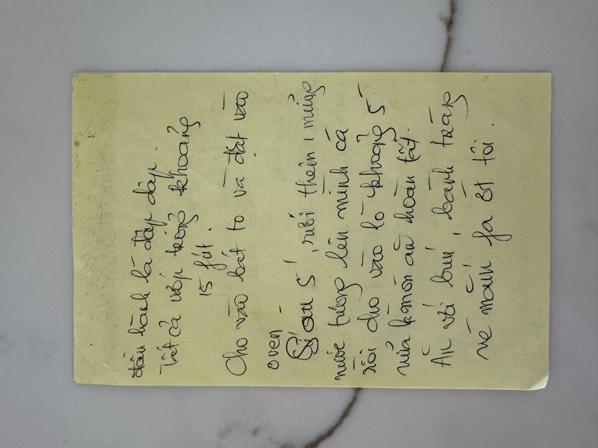

← Back to recipes

Cá Chim Trắng Nướng
Grilled White Pomfret
From Mẹ — Oanh
Nguyên liệu · Ingredients
- 1 whole white pomfret (cá chim trắng), about 1.5 lbs, cleaned and scaled
- 1 thumb-sized piece of ginger (gừng), julienned
- 4 stalks scallions (hành lá), cut into 3cm pieces
- 2 tablespoons soy sauce
- 1 tablespoon fish sauce (nước mắm)
- 1 tablespoon cooking wine or rice wine
- 1 teaspoon sesame oil
- ½ teaspoon black pepper
Nước chấm · Dipping Sauce
- 2 stalks lemongrass (sả), finely minced
- 2 fresh chili peppers, finely chopped
- 3 cloves garlic, minced
- 3 tablespoons fish sauce
- 2 tablespoons sugar
- Juice of 1 lime
Để ăn kèm · To Serve
- Rice vermicelli (bún)
- Rice paper (bánh tráng)
- Fresh herbs and lettuce
Cách làm · Instructions
- Score the pomfret with 3 diagonal cuts on each side — this lets the marinade soak deep into the flesh and helps it cook evenly.
- Marinate the fish with soy sauce, fish sauce, cooking wine, ginger, scallion pieces, and black pepper. Let it sit for 15 minutes. Mẹ would tuck ginger and scallions inside the cuts and the belly cavity too.
- Preheat the oven to 400°F. Line a baking sheet with foil and lightly oil it. Place the fish on the sheet with all its marinade and aromatics.
- Bake for about 5 minutes, then open the oven and drizzle more soy sauce over the top. Bake for another 5 minutes, or until the fish is cooked through and the skin is lightly golden.
- While the fish bakes, make the dipping sauce: mix lemongrass, chili, garlic, fish sauce, sugar, and lime juice. Stir until the sugar dissolves. This bright, spicy sauce cuts through the richness of the fish perfectly.
- Serve the whole fish on a platter with vermicelli, rice paper, and fresh herbs. Break off pieces of fish, wrap them in rice paper with herbs and noodles, and dip in the lemongrass-chili sauce. Mẹ always said pomfret is the sweetest fish — it deserves a simple preparation that lets its flavor shine.
Công thức gốc · Original handwritten recipe

❦
A recipe from Mẹ's kitchen